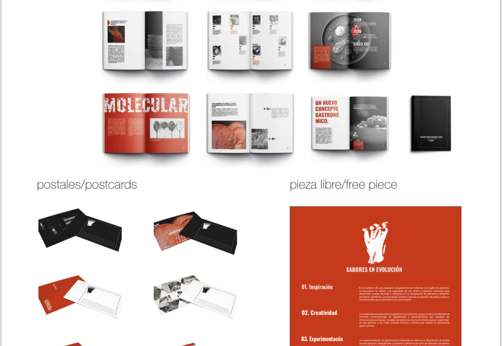
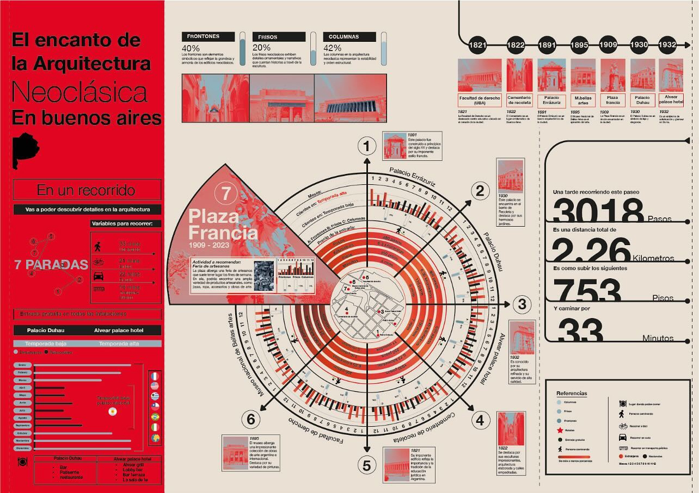
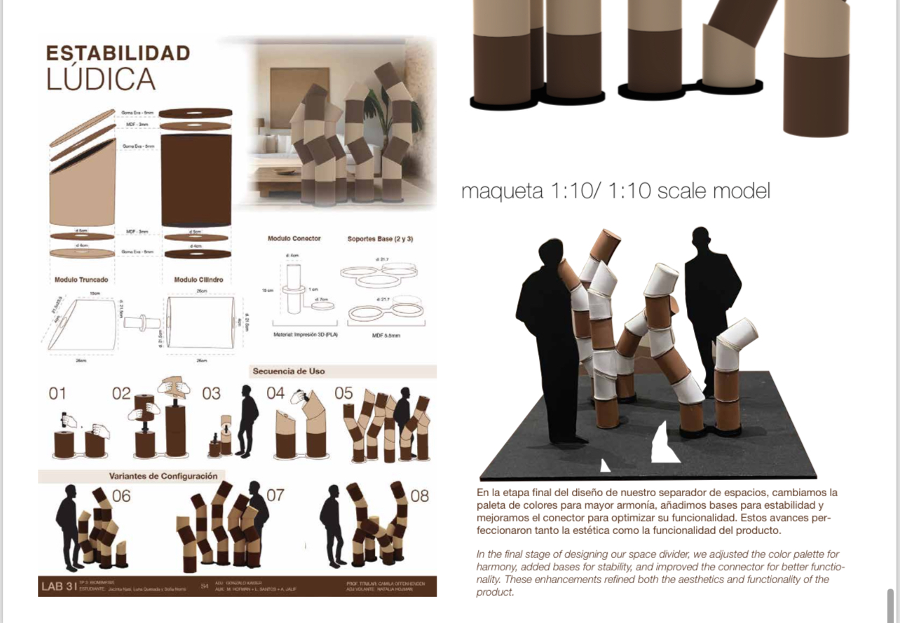

Portfolio
Diseño integral
Exploración de proyectos desde el modelado 3D, ilustración y edición audiovisual hasta piezas editoriales. Cada trabajo nace de la prueba, el error y el juego.



Enraizar
Proyecto de jardinería y comunicación visual en redes, en conjunto con mi mamá. Diseñamos con plantas nativas, compartimos ideas de combinaciones y promovemos el paisajismo sustentable.


Conocimientos
- Identidad visual: logos, paletas, manuales
- Diseño editorial: revistas, libros, catálogos
- Ilustración y dibujo: digital y manual
- Modelado 3D y renders: Rhino, KeyShot
- Edición audiovisual: Premiere, Photoshop
- Redes sociales: gestión de contenidos y estrategia
- Fotografía y dirección de arte